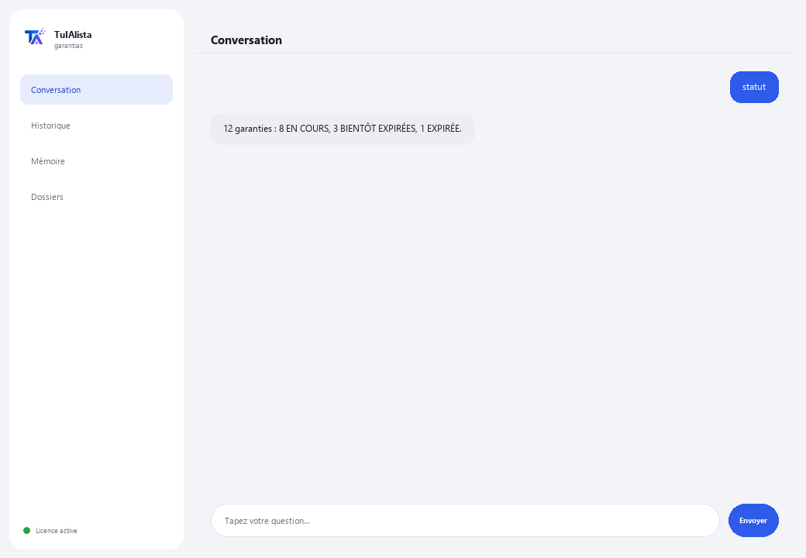

Agent Réclamations et garanties
Suit vos garanties, vous alerte avant qu'elles n'expirent et vous génère la lettre de réclamation prête à envoyer.
Que résout-il et de quoi avez-vous besoin ?
Les particuliers et les entreprises perdent de l'argent à cause de garanties qui expirent sans que personne ne les vérifie : un électroménager, un ordinateur portable, un outil tombé en panne qui était encore couvert. Cet agent transforme vos tickets, factures et justificatifs éparpillés en un système de récupération active.
- Vous avez besoin de : votre clé de licence (TIA-XXXX-XXXX-XXXX-XXXX) et du dossier contenant vos justificatifs. Ni Python ni connaissances techniques.
- Premier résultat en moins de 5 minutes : vous installez, activez, choisissez votre dossier et lancez statut pour voir l'état de toutes vos garanties.
- Vos justificatifs ne quittent jamais votre ordinateur — l'analyse s'exécute localement.
soporte@tuialista.com ou visitez tuialista.com/soporte — nous répondons généralement le jour même.1 Ce que fait cet agent
Vous lui indiquez le dossier contenant vos tickets, factures et justificatifs et il :
- Les lit (texte, PDF, Word, Excel et CSV), sans que vous ayez à les ouvrir un par un.
- Extrait les données d'achat : produit, date, montant, magasin, numéro de série et durée de garantie.
- Calcule le statut de chaque garantie : en cours, bientôt expirée ou expirée.
- Vous alerte des garanties bientôt expirées avant qu'il ne soit trop tard.
- Génère une lettre de réclamation formelle prête à envoyer (avec référence aux lois de protection du consommateur applicables).
- Calcule la valeur totale de vos produits encore couverts.
- Répond à vos questions : “mon ordinateur portable est-il encore sous garantie ?”
Résultat : vous arrêtez de perdre des garanties par oubli et récupérez l'argent qui vous revient.
2 Installation (2 minutes)
Pour Windows. Pas besoin d'internet permanent ni de rien envoyer sur le cloud.
Téléchargez l'installateur depuis tuialista.com/descargar (agent Garanties) et ouvrez-le. Il crée un raccourci sur votre bureau avec le logo — pas besoin de Python ni de terminal.
Double-cliquez sur la nouvelle icône. Collez votre clé de licence (reçue par e-mail à l'achat) et cliquez sur Activer. Une coche verte apparaît quand elle est valide.
Sélectionnez le dossier contenant vos tickets et justificatifs et cliquez sur Commencer à utiliser l'agent. La prochaine fois, il démarre directement — il se souvient de votre clé et de votre dossier.
3 Comment l'utiliser
L'agent ouvre une fenêtre de discussion, comme une app de messagerie — pas un écran noir de programmeur. Vous écrivez votre commande ou votre question dans le champ de texte en bas, cliquez sur Envoyer (ou Entrée), et la réponse apparaît comme un message, exactement comme sur cette image réelle :

Les commandes suivantes sont les mots que vous pouvez écrire dans ce même champ de texte :
> statutToutes vos garanties : EN COURS, BIENTÔT EXPIRÉE, EXPIRÉE ou SANS DATE, avec les jours restants.
> bientot [jours]Garanties qui expirent dans les N prochains jours (30 par défaut), pour réclamer à temps. Ex. : bientot 60.
> réclamablesProduits sous garantie active, en indiquant si vous avez toutes les données pour réclamer ou ce qui vous manque.
> réclamer <produit>La lettre de réclamation formelle prête, avec référence aux lois de protection du consommateur, et un espace pour décrire le problème. Ex. : réclamer ordinateur.
> manquantsJustificatifs auxquels il manque une donnée clé (date, montant, magasin, numéro de série) pour pouvoir réclamer.
> couvertAdditionne la valeur de vos produits sous garantie active et bientôt expirée.
> question libre ?Écrivez toute question en langage naturel, ex. : combien de temps me reste-t-il de garantie sur le réfrigérateur ?
> quitterTermine la session (fonctionne aussi avec exit).
Vous voulez voir les 20 recettes complètes avec un exemple réel de chacune ? Consultez le Catalogue de recettes — un document à part vu sa longueur : catalogo_recetas.pdf à côté de ce manuel, ou la version interactive sur tuialista.com/guia/garantias/recetas.
4 Exemples d'usage courant
Vérifier ce qui arrive bientôt à expiration
bientot 45 — vous voyez quelles garanties expirent bientôt et décidez s'il vaut mieux réclamer maintenant.
Réclamer un produit en panne
réclamables → réclamer mixeur — vous confirmez qu'il est encore sous garantie et obtenez la lettre prête.
Savoir combien vous avez de couvert
couvert
Compléter ce qui manque
manquants — vous détectez quels justificatifs ont besoin de plus de données avant de pouvoir réclamer.
5 Questions fréquentes
Mes justificatifs sont-ils envoyés sur internet ?
Quels formats accepte-t-il ?
Comment connaît-il la date, le montant et la garantie ?
Que se passe-t-il si le justificatif n'indique pas la durée de garantie ?
La lettre de réclamation est-elle valide légalement ?
Dans quelle langue répond-il ?
Lit-il un PDF scanné ?
Modifie-t-il mes fichiers ?
Puis-je changer le dossier ?
Remplace-t-il un conseil juridique ou de consommation ?
6 Résolution de problèmes
Un .pdf, .docx ou .xlsx ne se lit pas
Affiche “0 justificatifs”
Affiche “Licence invalide” ou demande de se reconnecter
“Aucun fournisseur d'IA configuré”
Aucune de ces solutions n'a résolu votre problème ? Écrivez-nous directement — nous serons ravis de l'examiner avec vous.
soporte@tuialista.com ou visitez tuialista.com/soporte — nous répondons généralement le jour même.7 Confidentialité
Vos justificatifs ne quittent jamais votre ordinateur.
- L'agent lit et analyse les fichiers localement, sur votre propre appareil. Il ne les envoie à aucun serveur.
- L'extraction des données d'achat et le calcul des validités se produisent sur votre machine.
- La seule chose qui transite par internet est : (1) une vérification que votre licence est active — qui n'inclut pas vos justificatifs —, et (2) lors de la génération d'une lettre de réclamation ou d'une question libre, un fragment de l'information pertinente est envoyé au moteur d'IA pour rédiger cette réponse.